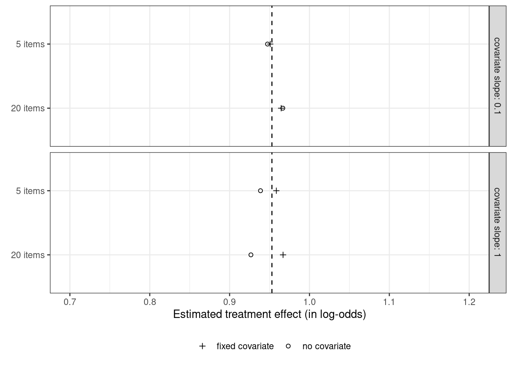
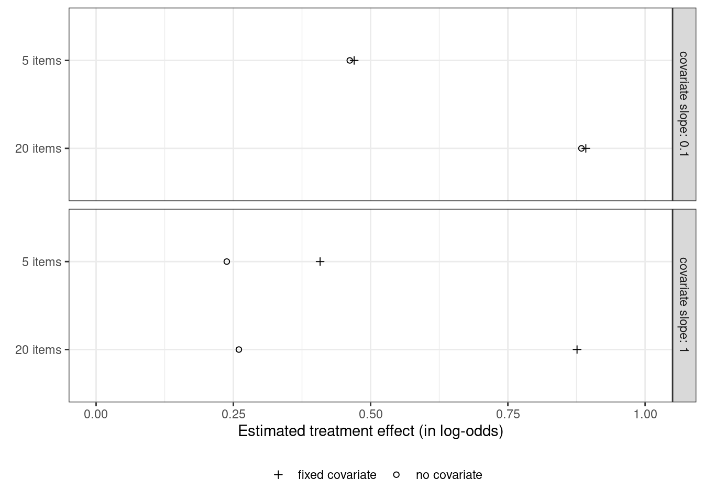

Covariate adjustment in logistic mixed models: Is it worth the effort?
The previous post investigated whether adjusting for covariates is useful when analysing binary data collected in a randomised experiment with one observation per participant. This turned out to be the case in terms of statistical power and obtaining a more accurate estimate of the treatment effect. This posts investigates whether these benefits carry over to mixed-effect analyses of binary data collected in randomised experiments with several observations per participant. The results suggest that, while covariate adjustment may be worth it if the covariate is a very strong determinant of individual differences in the task at hand, the benefit doesn’t seem large enough to warrant collecting the covariate variable in an experiment I’m planning.
Background
I mostly deal with binary dependent variables – whether a word was translated correctly (yes or no), for instance. When each participant contributes only a single datapoint, binary data can be analysed using logistic regression models. More often than not, however, participants are asked to translate several words, i.e. several datapoints are available per participant. This ‘clustering’ needs to be taken into account in the analysis, which is where logistic mixed-effects models come in (see Jaeger 2008 for a rundown).
For a new experiment I’m planning, it’d be useful to know whether I should collect between-subjects variables (the participants’ language skills) that are likely to account for inter-individual differences in translation performance but that don’t interest me as such. What interests me instead is the effect of the learning condition, to which the participants will be assigned randomly. Nonetheless, as the previous post shows, accounting for important if uninteresting covariates could be beneficial in terms of power and the accuracy of the estimated treatment effect.
However, when analysing an earlier experiment, I noticed that including covariates did not really affect the estimate of the treatment effect nor its standard error. Since collecting these variables will lengthen the data collection sessions, it’d be useful to know whether the additional time and effort are actually worth it from a statistical point of view. I didn’t find much in the way of readable literature that addresses this questions, so I ran some simulations to find out.
Set-up
The set-up for the simulations is as follows. Sixty German-speaking participants are randomly and evenly assigned to either the experimental or the control condition. During training, the participants in the experimental condition are exposed to a series of Dutch–German word pairs, some of which feature a systematic interlingual correspondence (e.g. Dutch oe = German u as in ‘groet’–‘Gruss’). The participants in the control group are exposed to comparable word pairs without this interlingual correspondence. During testing, all participants are asked to translate previously unseen Dutch words into German. The target stimuli are those that contain Dutch oe, and the question is whether participants in the experimental condition are more likely to apply the interlingual correspondence when translating these words than the participants in the control group. After the experiment, all participants take a German vocabulary test, which a previous study had suggested to be a strong predictor of interindividual differences in this kind of task.
Settings
Update (2023-08-27): I slightly modified the R code and reran the simulations. You now find the R code at the bottom of this post.
While I’d be chuffed if someone would go through it with the fine-toothed comb, the general idea is this. I took data from a previous experiment similar to the one I’m planning and fitted a model to this dataset. On the basis of the fitted model, I generated new datasets for which I varied the following parameters:
- the number of target stimuli: 5 vs. 20 items per participant;
- the size of the effect of the between-subjects covariate: realistic (a slope of 0.1) and hugely exaggerated (slope of 1.0). The slope of 0.1 is ‘realistic’ in that it is pretty close to the covariate effect found in the original study. The simulations with the much larger covariate effect were run in order to gauge power in situations were large inter-individual differences exist that can, however, be captured using a covariate.
The distribution of the covariate scores in the simulated datasets was similar to the one in the original one. The number of participants was fixed at 60, distributed evenly between the two conditions, and the size of the experimental effect was assumed to be equal to that of the original study. A study with more participants or investigating a larger effect size will obviously have more statistical power, but the precise power level isn’t what interests me. Rather, what I wanted to find out is, given a fixed effect size and a fixed number of participants, would it be worth it to collect a between-subjects covariate and include it in the analysis? To address this question, I compared the power of logistic mixed-effects models with and without covariates fitted to the simulated datasets. Per parameter combination, 500 simulated datasets were generated and analysed. This is not a huge number, but running logistic mixed model analyses takes a lot of time.
Results
Treatment estimate
Figure 1 shows how well logistic mixed-effect models with and without the between-subjects covariate estimated the true treatment effect on average.
For the realistic covariate slope of 0.1, the covariate-adjusted and -unadjusted models produce essentially the same and highly accurate estimate of the treatment effect. Even for the unrealistically large covariate slope of 1.0, i.e. for datasets with extreme but readily accountable inter-individual differences, the two models perform more or less on par.
From this, I tentitatively conclude that, for this kind of study, accounting for known sources of inter-individual variation using covariates does not substantially affect the estimates of the experimental effect.
Power
Figure 2 shows the proportion of significant treatment effects out of 500 simulation runs for the covariate-adjusted and -unadjusted models.

For a realistic covariate effect (slope of 0.1), adding the between-subjects covariate improves power only marginally (by 1 to 2 percentage points). For larger covariate effects, however, the gain in power is dramatic, especially if a fair number of datapoints are available per participant.
Conclusion and outlook
Adjusting for a between-subjects covariate in a between-subjects randomised experiment may be well worth it in terms of statistical power if the covariate is very strongly related to the outcome. For the kind of task I want to investigate, though, the relationship between the covariate and the outcome doesn’t seem to be large enough for covariate adjustment to have any noticeable effect on the results. Presumably, the model’s by-subject random intercepts do a sufficiently good job in accounting for interindividual differences in this case. In practical terms, these insights will be useful to me as not collecting the between-subjects variable should free up time elsewhere in the data collection sessions.
Lastly, some new questions that arose during this exploration:
- Does accounting for a strong within-subjects covariate affect power in a between-subjects randomised experiment?
- Would by-item/by-participant variability in the covariate effects change these conclusions? Specifically, would accounting for the covariate effect using both a fixed and a random term improve power? In this dataset, the by-item variability in the between-subjects covariate was negligible, but this is probably different for other variables.
R code
# Read in data
# Accompanying article: http://homeweb.unifr.ch/VanhoveJ/Pub/papers/Vanhove_CorrespondenceRules.pdf
dat_oe <- read.csv("http://homeweb.unifr.ch/VanhoveJ/Pub/Data/correspondences_shortened_oe.csv")
# Summarise by participant (needed for simulation)
library(tidyverse)
perPart <- dat_oe |>
group_by(Subject) |>
summarise(
c.EnglishScore = mean(c.EnglishScore),
c.WSTRight = mean(c.WSTRight)
)
# Recode LearningCondition as numeric (-0.5, 0.5) (sum coding)
dat_oe$LearningCondition <- ifelse(dat_oe$LearningCondition == "ij-ei", -0.5, 0.5)
# CorrectVowel is factor
dat_oe$CorrectVowel <- factor(dat_oe$CorrectVowel)
# Fit model on real data
library(lme4)
mod <- glmer(CorrectVowel ~ LearningCondition + c.WSTRight +
(1 | Subject) + (1 + LearningCondition | Item),
data = dat_oe, family = binomial, control = glmerControl(optimizer="bobyqa"))
# Extract random effects
thetas <- getME(mod,"theta")
# Extract fixed effects
betas <- fixef(mod)
# betas[1]: Intercept
# betas[2]: LearningCondition (effect of condition)
# betas[3]: c.WSTRight (effect of covariate)
######################################
## Function for simulating new data ##
######################################
# Function for simulating new data
newdata.fnc <- function( k = 80, # no. participants
m = 24, # no. items/participant
# these are the original estimates:
Intercept = -0.9332077,
eff.Condition = 0.9529923,
eff.Covariate = 0.1189162,
# multiplicator factor covariate scores
# (not relevant here)
covariate.multiple = 1) {
betas[1] <- Intercept
betas[2] <- eff.Condition
betas[3] <- eff.Covariate
### Generate new data set with k participants and m items
# First generate k new participants,
# randomly assign them to the experimental/control conditions,
# and assign a covariate score to them.
# The covariate scores are drawn with replacement from the original study's
# covariate distribution and multiplied by the factor 'covariate.multiple'.
parts <- data.frame(Subject = factor(1:k),
LearningCondition = sample(c(rep(-0.5, k/2), # not really needed in this case
rep(0.5, k/2))),
c.WSTRight = sample(covariate.multiple*perPart$c.WSTRight, k, replace = TRUE))
# Then generate m new items.
items <- data.frame(Item = factor(1:m))
# Fully cross participants and items.
newdat <- expand.grid(Subject = factor(1:k),
Item = factor(1:m))
newdat <- merge(newdat, parts, by = "Subject")
# Generate new data
newdat$New <- factor(unlist(simulate(mod,
newdata = newdat,
allow.new.levels = TRUE,
newparams = list(theta = thetas, beta = betas))))
### Run models for model comparison WITHOUT covariate
mod1 <- glmer(New ~ (1 | Subject) + (1 + LearningCondition | Item),
data = newdat, family = binomial,
control = glmerControl(optimizer="bobyqa"))
mod2 <- update(mod1, . ~ . + LearningCondition)
### Run models for model comparison with FIXED covariate
mod3 <- glmer(New ~ c.WSTRight + (1 | Subject) + (1 + LearningCondition | Item),
data = newdat, family = binomial,
control = glmerControl(optimizer="bobyqa"))
mod4 <- update(mod3, . ~ . + LearningCondition)
# Compare mod1 and mod2 and return p-value
pvalue.nocovar <- anova(mod1, mod2)[2, 8]
# Compare mod3 and mod4 and return p-value
pvalue.fixedcovar <- anova(mod3, mod4)[2, 8]
# Save estimate and se of mod2
est.nocovar <- summary(mod2)$coef[2,1]
se.nocovar <- summary(mod2)$coef[2,2]
# Save estimate and se of mod4
est.fixedcovar <- summary(mod4)$coef[3,1]
se.fixedcovar <- summary(mod4)$coef[3,2]
# Return p-values, estimates and standard errors
return(list(pvalue.nocovar, pvalue.fixedcovar,
est.nocovar, est.fixedcovar,
se.nocovar, se.fixedcovar,
eff.Condition,
eff.Covariate))
}
#################################################################################################
## Function for running above simulation 100 times and return power (%p < 0.05), average/sd ES ##
#################################################################################################
power.fnc <- function(runs = 500, # number of simulation runs
k = 60,
m = 20,
Intercept = -0.9332077,
eff.Condition = 0.9529923,
eff.Covariate = 0.1,
covariate.multiple = 1) {
# Run newdata.fnc a couple of times
sim <- replicate(runs,
newdata.fnc(k = k,
m = m,
Intercept = Intercept,
eff.Condition = eff.Condition,
eff.Covariate = eff.Covariate,
covariate.multiple = covariate.multiple))
# And compute power
power.nocovar <- mean(unlist(sim[1, ]) <= 0.05)
power.fixedcovar <- mean(unlist(sim[2, ]) <= 0.05)
# Compute average effect
mean.est.nocovar <- mean(unlist(sim[3,]))
mean.est.fixedcovar <- mean(unlist(sim[4,]))
# Standard deviation of effect (not reported)
sd.est.nocovar <- sd(unlist(sim[5,]))
sd.est.fixedcovar <- sd(unlist(sim[6,]))
return(list(power.nocovar = power.nocovar,
power.fixedcovar = power.fixedcovar,
mean.est.nocovar = mean.est.nocovar,
mean.est.fixedcovar = mean.est.fixedcovar,
sd.est.nocovar = sd.est.nocovar,
sd.est.fixedcovar = sd.est.fixedcovar,
k = k,
m = m,
eff.Condition = eff.Condition,
eff.Covariate = eff.Covariate,
covariate.multiple = covariate.multiple))
}
# Run simulation
parameter_combinations <- expand.grid(m = c(5, 20),
eff.Covariate = c(0.1, 1.0))
library(parallel)
results <- mcmapply(
power.fnc
, m = parameter_combinations$m
, eff.Covariate = parameter_combinations$eff.Covariate
, MoreArgs = list(k = 60, runs = 500)
, mc.cores = 4
)
results <- cbind(parameter_combinations, t(results))
results |>
mutate(across(where(is.list), unlist)) |>
write_csv("simulations_glmm.csv")Software versions
devtools::session_info()─ Session info ───────────────────────────────────────────────────────────────
setting value
version R version 4.3.1 (2023-06-16)
os Ubuntu 22.04.3 LTS
system x86_64, linux-gnu
ui X11
language en_US
collate en_US.UTF-8
ctype en_US.UTF-8
tz Europe/Zurich
date 2023-08-27
pandoc 3.1.1 @ /usr/lib/rstudio/resources/app/bin/quarto/bin/tools/ (via rmarkdown)
─ Packages ───────────────────────────────────────────────────────────────────
package * version date (UTC) lib source
bit 4.0.5 2022-11-15 [1] CRAN (R 4.3.0)
bit64 4.0.5 2020-08-30 [1] CRAN (R 4.3.0)
cachem 1.0.6 2021-08-19 [2] CRAN (R 4.2.0)
callr 3.7.3 2022-11-02 [1] CRAN (R 4.3.1)
cli 3.6.1 2023-03-23 [1] CRAN (R 4.3.0)
colorspace 2.1-0 2023-01-23 [1] CRAN (R 4.3.0)
crayon 1.5.2 2022-09-29 [1] CRAN (R 4.3.1)
devtools 2.4.5 2022-10-11 [1] CRAN (R 4.3.1)
digest 0.6.29 2021-12-01 [2] CRAN (R 4.2.0)
dplyr * 1.1.2 2023-04-20 [1] CRAN (R 4.3.0)
ellipsis 0.3.2 2021-04-29 [2] CRAN (R 4.2.0)
evaluate 0.15 2022-02-18 [2] CRAN (R 4.2.0)
fansi 1.0.4 2023-01-22 [1] CRAN (R 4.3.1)
farver 2.1.1 2022-07-06 [1] CRAN (R 4.3.0)
fastmap 1.1.0 2021-01-25 [2] CRAN (R 4.2.0)
forcats * 1.0.0 2023-01-29 [1] CRAN (R 4.3.0)
fs 1.5.2 2021-12-08 [2] CRAN (R 4.2.0)
generics 0.1.3 2022-07-05 [1] CRAN (R 4.3.0)
ggplot2 * 3.4.2 2023-04-03 [1] CRAN (R 4.3.0)
glue 1.6.2 2022-02-24 [2] CRAN (R 4.2.0)
gtable 0.3.3 2023-03-21 [1] CRAN (R 4.3.0)
hms 1.1.3 2023-03-21 [1] CRAN (R 4.3.0)
htmltools 0.5.5 2023-03-23 [1] CRAN (R 4.3.0)
htmlwidgets 1.6.2 2023-03-17 [1] CRAN (R 4.3.1)
httpuv 1.6.11 2023-05-11 [1] CRAN (R 4.3.1)
jsonlite 1.8.7 2023-06-29 [1] CRAN (R 4.3.1)
knitr 1.39 2022-04-26 [2] CRAN (R 4.2.0)
labeling 0.4.2 2020-10-20 [1] CRAN (R 4.3.0)
later 1.3.1 2023-05-02 [1] CRAN (R 4.3.1)
lifecycle 1.0.3 2022-10-07 [1] CRAN (R 4.3.0)
lubridate * 1.9.2 2023-02-10 [1] CRAN (R 4.3.0)
magrittr 2.0.3 2022-03-30 [1] CRAN (R 4.3.0)
memoise 2.0.1 2021-11-26 [2] CRAN (R 4.2.0)
mime 0.10 2021-02-13 [2] CRAN (R 4.0.2)
miniUI 0.1.1.1 2018-05-18 [1] CRAN (R 4.3.1)
munsell 0.5.0 2018-06-12 [1] CRAN (R 4.3.0)
pillar 1.9.0 2023-03-22 [1] CRAN (R 4.3.0)
pkgbuild 1.4.2 2023-06-26 [1] CRAN (R 4.3.1)
pkgconfig 2.0.3 2019-09-22 [2] CRAN (R 4.2.0)
pkgload 1.3.2.1 2023-07-08 [1] CRAN (R 4.3.1)
prettyunits 1.1.1 2020-01-24 [2] CRAN (R 4.2.0)
processx 3.8.2 2023-06-30 [1] CRAN (R 4.3.1)
profvis 0.3.8 2023-05-02 [1] CRAN (R 4.3.1)
promises 1.2.0.1 2021-02-11 [1] CRAN (R 4.3.1)
ps 1.7.5 2023-04-18 [1] CRAN (R 4.3.1)
purrr * 1.0.1 2023-01-10 [1] CRAN (R 4.3.0)
R6 2.5.1 2021-08-19 [2] CRAN (R 4.2.0)
Rcpp 1.0.11 2023-07-06 [1] CRAN (R 4.3.1)
readr * 2.1.4 2023-02-10 [1] CRAN (R 4.3.0)
remotes 2.4.2 2021-11-30 [2] CRAN (R 4.2.0)
rlang 1.1.1 2023-04-28 [1] CRAN (R 4.3.0)
rmarkdown 2.21 2023-03-26 [1] CRAN (R 4.3.0)
rstudioapi 0.14 2022-08-22 [1] CRAN (R 4.3.0)
scales 1.2.1 2022-08-20 [1] CRAN (R 4.3.0)
sessioninfo 1.2.2 2021-12-06 [2] CRAN (R 4.2.0)
shiny 1.7.4.1 2023-07-06 [1] CRAN (R 4.3.1)
stringi 1.7.12 2023-01-11 [1] CRAN (R 4.3.1)
stringr * 1.5.0 2022-12-02 [1] CRAN (R 4.3.0)
tibble * 3.2.1 2023-03-20 [1] CRAN (R 4.3.0)
tidyr * 1.3.0 2023-01-24 [1] CRAN (R 4.3.0)
tidyselect 1.2.0 2022-10-10 [1] CRAN (R 4.3.0)
tidyverse * 2.0.0 2023-02-22 [1] CRAN (R 4.3.1)
timechange 0.2.0 2023-01-11 [1] CRAN (R 4.3.0)
tzdb 0.4.0 2023-05-12 [1] CRAN (R 4.3.0)
urlchecker 1.0.1 2021-11-30 [1] CRAN (R 4.3.1)
usethis 2.2.2 2023-07-06 [1] CRAN (R 4.3.1)
utf8 1.2.3 2023-01-31 [1] CRAN (R 4.3.1)
vctrs 0.6.3 2023-06-14 [1] CRAN (R 4.3.0)
vroom 1.6.3 2023-04-28 [1] CRAN (R 4.3.0)
withr 2.5.0 2022-03-03 [2] CRAN (R 4.2.0)
xfun 0.39 2023-04-20 [1] CRAN (R 4.3.0)
xtable 1.8-4 2019-04-21 [1] CRAN (R 4.3.1)
yaml 2.3.5 2022-02-21 [2] CRAN (R 4.2.0)
[1] /home/jan/R/x86_64-pc-linux-gnu-library/4.3
[2] /usr/local/lib/R/site-library
[3] /usr/lib/R/site-library
[4] /usr/lib/R/library
──────────────────────────────────────────────────────────────────────────────